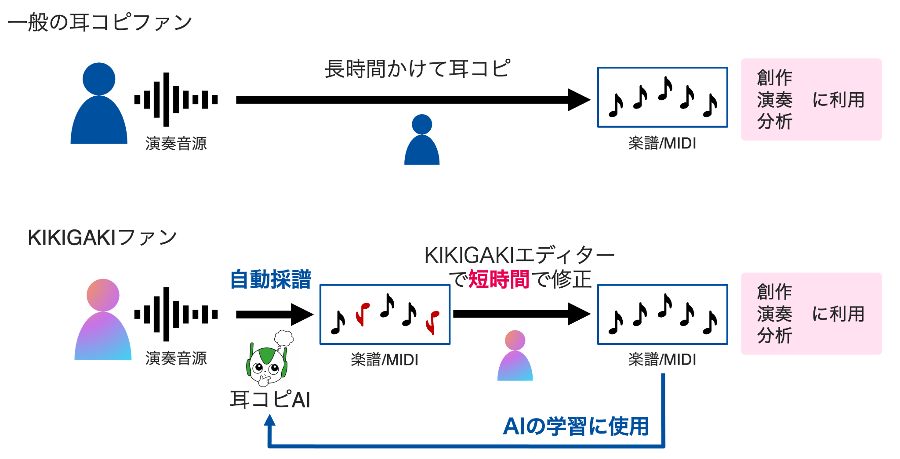

KIKIGAKIプロジェクトについて
KIKIGAKIプロジェクトは「耳コピファンが育てる耳コピAI」をコンセプトにしています。九州大学文化知能科学研究室が運営しています。
通常は長時間かけて行う耳コピ作業を、AIがまず自動採譜し、参加者が短時間で確認・修正します。修正された楽譜・MIDIデータや修正操作ログは、耳コピAIの学習・改善に活用されます。

AIが自動採譜
演奏音源から楽譜・MIDIの候補を生成します。
人が確認・修正
KIKIGAKIエディターで自動採譜結果を確認し、必要な箇所を修正します。
AIの学習に利用
修正操作ログを蓄積し、耳コピAIの精度向上につなげます。
対象となる音楽
本プロジェクトでは、バンド曲などの伴奏付き歌唱曲に含まれるメインボーカルパートの耳コピを対象とします。
- 音源の長さは最長10分間です。
- 拍時間および物理時間でのピアノロールを作成します。
- 耳コピ結果はMIDIファイルとして出力できます。
参加方法と参加に必要な環境
KIKIGAKIファンは会員制です。参加希望者は応募フォームから応募してください。参加には、プロジェクトの趣旨と規則を理解していることが必要です。
KIKIGAKIエディターを参加者自身のPCで実行・動作させるための環境が必要です。
- Pythonの環境構築が必要です。
- 一部のPC環境、特にWindows OSでは正常に動作しない可能性があります。
参加前に、動作環境や手順を確認してください。設定に不安がある場合は、運営側からの案内に従ってください。
作業の流れ
1
自動耳コピ依頼wav/mp3形式の音源を提出します。
2
自動採譜KIKIGAKIサーバーで自動採譜を行います。
3
データ受領自動採譜結果のデータ（kkgkファイル）を受け取ります。
4
KIKIGAKIプレーKIKIGAKIエディターにロードし、結果を確認・修正します。
5
結果提出編集後の修正操作ログを運営側に送信します。
著作権に関する注意
一般曲の楽譜を無断で公開することは、著作権法に抵触する可能性があります。
プロジェクトで扱う音源、AI生成結果、修正後のMIDI・kkgkファイル、修正操作ログなどは、運営側の案内に従って適切に取り扱ってください。
無断公開・無断配布は行わないでください。参加者は、プロジェクトの趣旨と規則を理解し、遵守する必要があります。
参加を希望される方へ
以下のフォームから応募してください。登録手順、動作環境、データ提出方法については、運営チームからの案内をご確認ください。
KIKIGAKIプロジェクトの運用開始は2026年8月上旬を予定しています。
KIKIGAKIボーカルプロジェクト 参加応募フォーム趣旨と規則を確認する